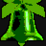
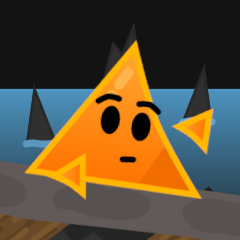
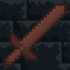
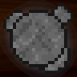
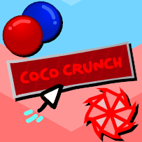
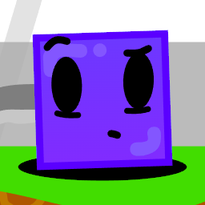
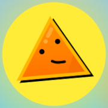

it's in the name (game)
Yeah, something like that. Anyhoo, I make games! Since I don't have the time nor patience to learn decent coding languages, we're stuck with Scratch and IGM. It's still cool.
I don't make games nearly as often as I'd like, but I usually give it my all! None of them take place in the same universe, and only a few games have "real" lore. (i'm not a great storyteller)
Oh yeah, you can also jump to the bottom if you'd like.
release list
Listed from latest to oldest.
Only includes featured games.
2026
2025
2024
2023
Unreleased
- Return to Mine!
- George 1.5
- You're Dating A Cucumber!
- Fire Forge


After Hours XIGM
Released on: 12/25/25
A point-and-click horror game where you work in the depths of Santa's workshop, fighting against what lurks in the shadows.
More about the game
This game was made for a game jam. But before it even started, I came up with the idea to make a FNAF-inspired game. At the time, I was going through a phase of sorts, which gave me the motivation I needed.
Once the jam officially began, I immediately sprang into action and started coding and doing my research. Even during finals week, I was still getting things done.
AHX is inspired by FNAF 1 and FNAF 3 in particular, since I love their atmospheres and ambience.

George 1.5Scratch
Work in progress
Explore the forgotten parts of the archipelago as George journeys through the horrifying secrets of his past.
More about the game
Months after the original George 1 was released, work on George 2 began. Inspired by a multitude of other Scratch platformers, it was slated to release mid-late 2022. However, those plans eventually fell through.
After going through four engines in total, I decided to scrap George 2 and start a new "in-between" chapter of the series.
Its story is much more fleshed out and well-written than its predecessor's, and the gameplay is smoother and more stable.

Labyrinths IIIGM
Released on: 05/23/25
A fast-paced dungeon crawler where you explore through a multitude of dungeons for loot, mine ore to craft better gear, and more!
More about the game
After being inspired by IGM games like Forez's Dream 2 and Waves, I started to make a prototype for Labyrinths II. It was nothing more than a test labyrinth and some basic gear. This was the pre-alpha version.
Soon enough, I developed more interesting mechanics and got a buddy of mine to make the game's art. A month of semi-active development later, the first alpha has officially released.

Stone Mine Simulator '24IGM
Released on: 08/08/24
A clicker game where you mine stone, buy strange buildings, and play minigames to mine more stone.
There's probably more to it than that.
More about the game
Before the school year started, I wanted to make one last project before my life became flooded with homework and chores. I thought making a neat clicker game would be great for this.
The original Stone Mine Simulator games were greatly lacking in quality and decent art, so this release aimed to revisit what them, properly fleshing them out with balanced mechanics and improved artwork.

LG's Remastered CollectionScratch
Released on: 03/03/24
A collection of three remasters, and the remaking of the games that defined my early 2020's era on Scratch.
More about the game
Once Sid's Adventure Chapter 1 was released, I accidentally discovered a couple deleted projects of mine—from waaaaay back in 2020. After seeing Infinity Player and EggWars, I had the urge to remaster them.
EggWars+ was the first remaster to be completed, and then I decided to basically re-remaster Infinity Player, since its Plus version was already out back from 2022. The Collection was finished in March.

Sid's AdventureScratch
Released on: 09/30/23
After an entire world was devastated by darkness, it's up to Sid to save it!
NOTE: only has one playable chapter.
More about the game
Starting off as a shelved project back from mid-2022, I decided to revive this project after being burnt out from the development hell that was George 2.
Inspired by nothing in particular, the game features a unique cast of characters that are all based off real-life shapes (except for Robert, who doesn't really fit but he's still there anyway).

George 1 RemasteredScratch
Released on: 05/07/23
Journey with George the Triangle through unfair level design, watch the narrative unfold, and save the archipelago from Greg's wrath!
More about the game
Inspired by classic Scratch platformers such as Chirpy the Penguin and Speedy, the original version of George 1 aimed to expand this little character I made for an animation nobody's ever seen.
It introduces staple characters like Greg and Cory to expand the universe, making it stand out and become something special.
Congration! You've reached the bottom of the page!
Now you can
jump back up.